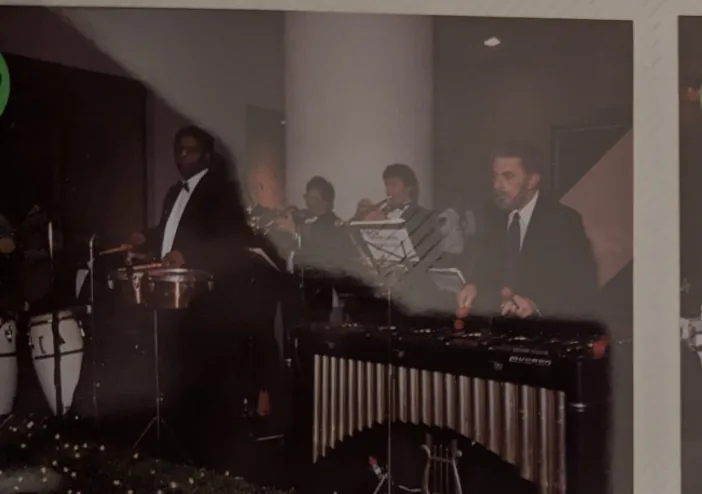
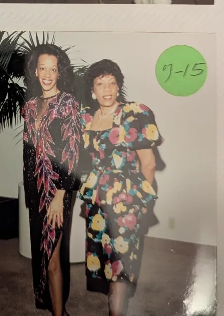
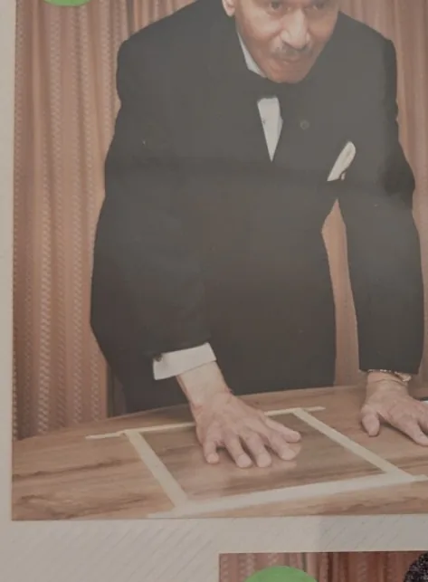
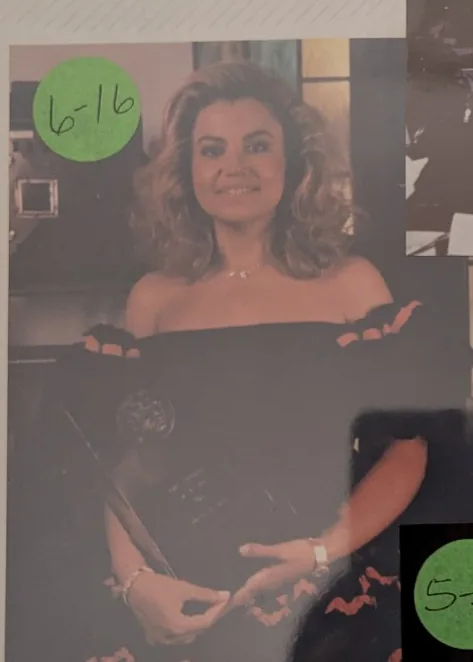
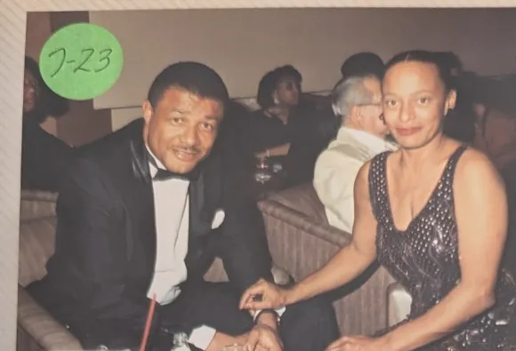

Black Filmmakers Hall of Fame
1990
The Hall of Fame’s program brought film lectures, competitions, public discussions, and the Seventeenth Annual Oscar Micheaux Awards to Oakland and Berkeley. Photographs from the albums show performances, presentations, receptions, and portraits.
Photographic record
Photographs from 1990
Speakers, musicians, award presentations, receptions, and handprint activities appear in the photographs preserved with the 1990 programs.
 Panel discussion
Panel discussion
Musical performance
Portraits
Handprint activity
Award presentation
ReceptionPhotographs are presented from original albums. Exact individual dates and occasions are identified only when supported by the evidence.
Today’s Black Cinema
Film and awards programs
A schedule preserved with the original album lists February programs ranging from film lectures to the annual Oscar Micheaux Awards.
- February 4, 11 & 18
James Moore Theatre · Oakland Museum
Film lectures
A series of film lectures under the title Today’s Black Cinema.
- February 23
Oakland Museum
Film competition awards
A program connected with the Hall of Fame’s film competition.
- February 24
Dwinelle Hall · UC Berkeley
Film-industry symposium
A public symposium devoted to cinema and the film industry.
- February 25
Paramount Theatre · Oakland
Seventeenth Annual Oscar Micheaux Awards
The annual ceremony recognizing Black filmmakers and performers.
The year comes from the original album label; the printed schedule supplies the listed dates and venues, which do not independently date each photograph.